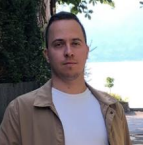

Me |
|---|
|  |
| My name is Roland Kovács. I live in Hungary, near to capital Budapest. Woking in software industry since 2016, currently at Varian since 2019 december. The design of my website mirrors me, I like simplicity. |
Professional past |
|
|---|---|
Varian |
December 2019 - On wards |
Software Engineer |
|
|
ARIA Oncology Information System, egy több programból álló
szoftver csomagon dolgozok. Aktívan együttműködök DevOps
témakörben is, junior kollegákat mentorálok, egyes projekteknek az
én csapatomra eső featurejei fejlesztését vezetem, ehez az
dokumentálok mind engeineering szinten, mind felhasználói szinten.
Keywords: C#, WPF, MS SQL, TFS, Azure DevOps, Team City, Build
Management, Mentoring, Scrum
|
|
Evosoft |
January 2019 - December 2019 |
Software Engineer |
|
|
A feladatom egy gyártósor feltérképezését, komponenseinek
konfigurációját lehetővé tevő szoftver átvétele volt egy német
csapattól, ezt kommunkálva és dokumentálva az Evosoft részére.
Keywords: C#, WPF, WinForms, Jenkins, Scrum
|
|
Labtech |
January 2017 - December 2018 |
Software Engineer |
|
I developed Cardiospy, a software analysing ECG recordings. Also
my job were:
Keywords: C#, WinForms, Jira, Jenkins, Scrum
|
|
Ozeki Informatics Ltd |
May 2016 - December 2016 |
Junior Software Developer |
|
|
Developed VoIP class library(SDK), fixed bugs.
Keywords: C#, ASP.NET, Jira
|
|
Education |
|
|---|---|
University of Debrecen |
2013-2017 |
|
Contributed to several school projects such as: Robocar, a common research platform for developing urban traffic control algorithms. Two main projects I worked on is 3D liver modelling program and one that also is my diploma thesis, Melanoma detection. |
|
Diploma thesis |
|
Melanoma - detecting skin cancer with massively parallellised image processing methods |
|
| I consumed several matemathicans work that published math models describing and detecting malicious moles. The got the math model and implemented it with C++, Intel Parallels Library and OpenCV. | |
Projects |
|
|---|---|
Rolippo |
|
|
Create and share shopping list between multiple users, without registration. Keywords: C#, Xamarin.Forms, ASP.NET, Azure
|
Achievements |
|
|---|---|
Microsoft Azure Data Fundamentals certification |
|
Transalted SemVer to Hungarian language |
|
Contributed to Microsoft Docs several times |